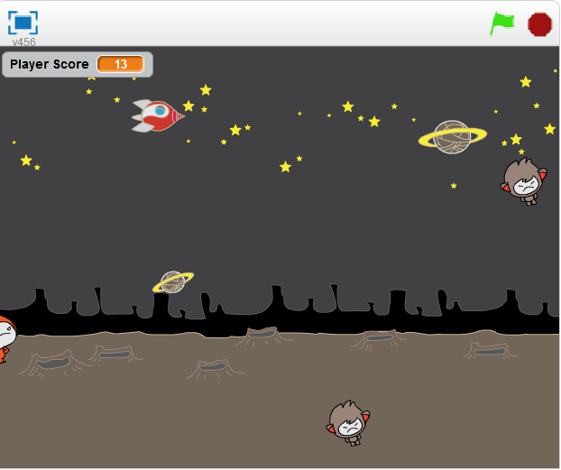
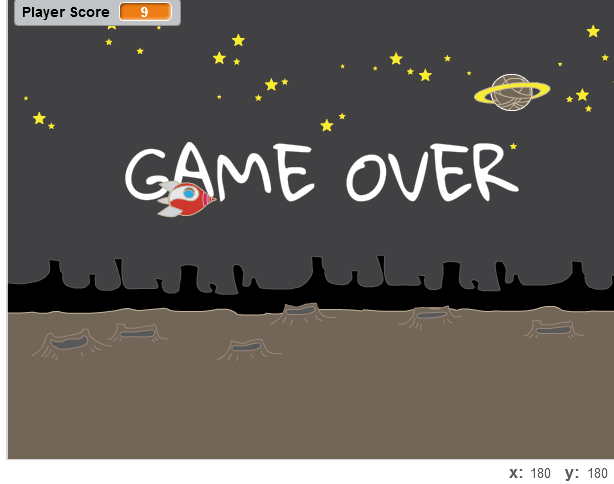
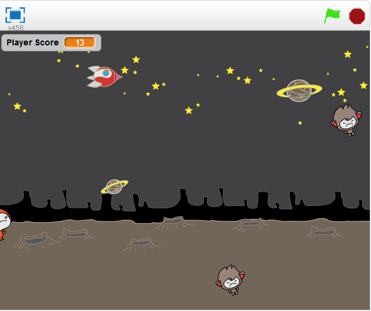
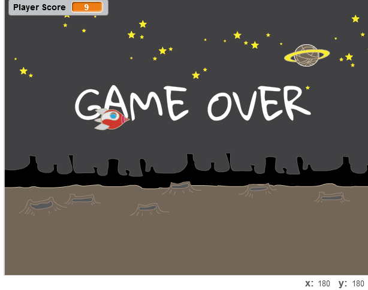
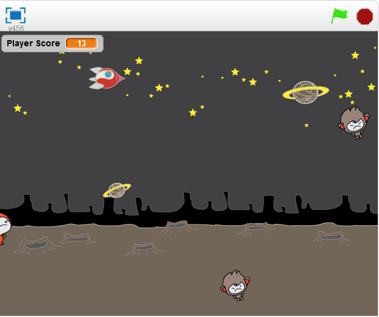
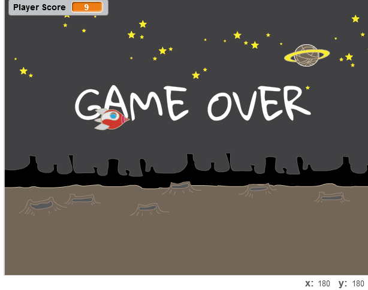

My birthday is in January which probably explains why I love the winter so much!! I love to: Eat food , Play sports , Shop , Sleep , And to save the best for last ... Listen to music


This game is called Spaceship warrior and it was created by my partner Jessica and I. The game is basically having the user play as a spaceship who is on a voyage in outter space and the goal of the game is to avoid the aliens that are floating around and continue as far as you can and if you fail to do so you will lose the game.
The picture above is a project a group I were working on to make LED lights light up on the robot. The was wiring proccess was very difficult however the task was completed and the goal was ultimately met.